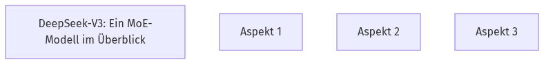

DeepSeek-V3: Ein MoE-Modell im Überblick
Hast du dich je gefragt, wie Open-Source LLMs zu den Spitzenmodellen aufschließen? DeepSeek-V3 ist ein großes Mixture-of-Experts (MoE) Modell mit 671 Milliarden Parametern, das den Fortschritt von Open-Source-Modellen vorantreibt. Es nutzt Multi-head Latent Attention (MLA) für effiziente Inferenz und DeepSeekMoE für kostengünstiges Training. Diese Architekturen wurden bereits in DeepSeek-V2 erfolgreich eingesetzt, um starke Leistung bei effizientem Training und Inferenz zu gewährleisten.
🧠
Quick Check
Welche Architekturmerkmale von DeepSeek-V3 sind für effiziente Inferenz und kostengünstiges Training verantwortlich?
DeepSeek-V3 nutzt Multi-head Latent Attention (MLA) für effiziente Inferenz und DeepSeekMoE für kostengünstiges Training, beides bewährte Architekturen aus DeepSeek-V2.
DeepSeek-V3: Ein Überblick

Erkunde die Schlüsselkomponenten von DeepSeek-V3.
Effizientes Training: FP8 und DualPipe
Wie kann ein riesiges Modell wie DeepSeek-V3 so effizient trainiert werden? 🚀 DeepSeek-V3 nutzt FP8 Mixed Precision Training, um die Trainingsgeschwindigkeit zu erhöhen und GPU-Speicher zu sparen. Der DualPipe-Algorithmus verbirgt zudem Kommunikation durch Überlappung mit Berechnungen, was Pipeline-Bubbles minimiert. Dies ermöglicht es, feingranulare Experten über Knoten hinweg zu nutzen, mit nahezu null Kommunikations-Overhead, selbst bei weiterer Skalierung.
🧠
Quick Check
Welche Technologie hilft DeepSeek-V3, den GPU-Speicherverbrauch zu senken und das Training zu beschleunigen?
FP8 Mixed Precision Training ermöglicht es DeepSeek-V3, den GPU-Speicherverbrauch zu senken und das Training zu beschleunigen.
Effizientes Training: FP8 & DualPipe
Visualisiere die Vorteile von FP8 und DualPipe.
DeepSeek-V3: Trainingsphasen und Kosten
Wie entsteht ein leistungsstarkes LLM wie DeepSeek-V3 und was kostet das? 💸 DeepSeek-V3 wurde stabil auf 14.8 Billionen Tokens vortrainiert. Danach erfolgte eine zweistufige Kontextlängenerweiterung auf bis zu 128K. Post-Training, mit SFT und RL, passte das Modell an menschliche Präferenzen an. Die Gesamtkosten betrugen 2.788 Millionen H800 GPU-Stunden, rund $5.576 Millionen USD.
🧠
Quick Check
Wie hoch waren die geschätzten Gesamtkosten für das Training von DeepSeek-V3?
Die Gesamtkosten für das Training von DeepSeek-V3 beliefen sich auf etwa $5.576 Millionen USD.
DeepSeek-V3: Trainingsphasen & Kosten
Verfolge den Trainingsprozess und die Kosten von DeepSeek-V3.
Visual Title Here
Visual description and instructions here...